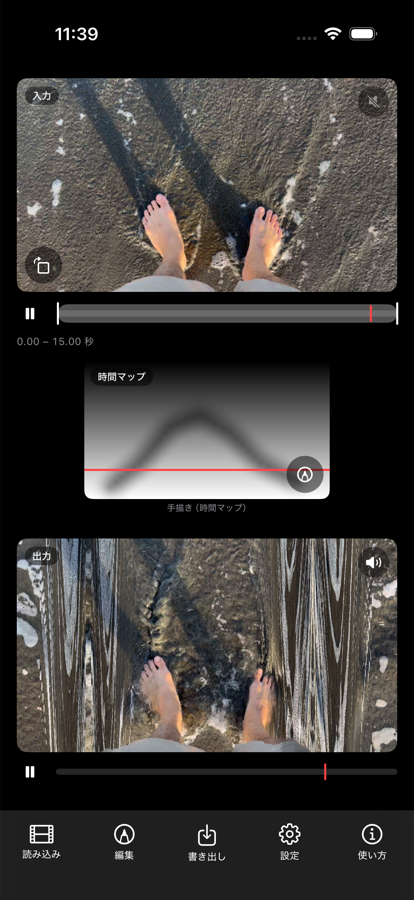

Time Flow Sketch
映像の中の時間の流れを、絵を描く感覚で操作する iPhone / iPad アプリ
このアプリについて
読み込んだ動画に対して、白黒の濃淡で「時間の流れの形」を描きます。 描いた明るさがそのまま時間の位置や再生の速さになり、画面の場所ごとに違う時間が流れはじめます。
指でなぞったところだけが先に進む。別の場所は逆再生になる。 ある部分だけ時間が止まったまま、まわりだけが動いていく。 ふだん一様に流れている映像の時間を、ばらばらに解きほぐして組み立て直すことができます。
基本の使い方

1. 画面の見かた
トップ画面は上から 入力映像・マップ画像・出力映像 の3段です。 同じ素材が、マップによってどう変わったかをその場で見比べられます。
それぞれの映像の下に再生バーがあります。右上のスピーカーで音を切り替えます。 入力は素材そのままの音、出力は時間操作を受けた音で、鳴るのはどちらか一方だけです。
最初は画面下の「読み込み」から動画を選びます。動きのある映像ほど効果がはっきり出ます。 フル HD 以下・30 秒以下の短い素材が扱いやすく、読み込みも速く済みます。

2. マップを描く
マップ画像の右下にある鉛筆アイコン、または画面下の「編集」から編集画面に入ります。 下半分のマップの上を指や Apple Pencil でなぞると、その明るさに応じて時間の流れが変わります。
黒いところは素材の始まりのほう、白いところは終わりのほうを映します。 上の映像に結果がその場で反映されるので、描きながら確かめられます。

3. 生成やプリセットから始める
右上のアイコンから、マップの作り方を切り替えられます。 グラデーション生成は規則的な縞模様を、 モーションから生成は映像自身の動きからマップを作ります。
プリセットで塗り直しでは、一色やグラデーションでマップ全体を塗り替えます。 各ボタンの下に、いまの設定でどう再生されるか（通常再生・逆再生・時間停止など）が表示されます。
生成したマップの上から、そのまま描き足すこともできます。
4. 書き出す
画面下の「書き出し」から、結果を動画として写真ライブラリへ保存します。
適用モード
| サーフェス | 画素ごとに時刻をずらします。描いた形がそのまま時間のゆがみになる、いちばん直感的なモードです。 |
|---|---|
| 縦スリット | 画面の縦の帯ごとに違う時刻を割り当てます。マップの縦方向が出力の時間、横方向が画面の位置に対応します。 |
| 横スリット | 縦スリットの向きを入れ替えたものです。 |
| レート | 明るさを再生の速さとして扱います。逆再生から早送りまで、場所ごとに変えられます。 |
| 空間マップ | 明るさを「画面のどこから映像を取ってくるか」として扱います。時間マップと組み合わせて使う補助的なモードです。 |
編集画面の左上にある「時間マップ・縦スリット」の表示をタップすると、 マップの種類と適用モードをまとめて切り替えられます。
よくある質問
動画の読み込みに時間がかかります
4K や長い動画は、写真ライブラリからの取り出しに数十秒かかることがあります。 短く切り出した素材のほうが試行錯誤しやすくなります。
アプリが途中で終了します
読み込んだ動画は端末のメモリに展開されます。 設定画面の「映像の品質」で解像度や常駐フレーム数を下げると改善します。 他のアプリを終了してからお試しください。
書き出した動画が見つかりません
書き出しに成功すると写真ライブラリに保存されます。 保存の許可を求めるダイアログで「許可しない」を選んだ場合は、 iOS の「設定」→「Time Flow」→「写真」から変更できます。
音はどこから鳴っていますか
映像の右上にあるスピーカーで切り替えます。 出力を選ぶと、読み込んだ動画の音声が映像と同じ時間操作を受けて鳴ります。 入力を選ぶと、素材そのままの音が等速で鳴ります。 鳴るのはどちらか一方だけで、同時には鳴りません。音声を持たない動画では無音になります。
外部ディスプレイにつなげますか
つなげます。HDMI や AirPlay でディスプレイに接続すると、 出力映像だけがそちらに全画面で表示されます。手元の画面は編集画面のまま使えるので、 大きな画面で結果を見ながら描けます。展示や上映にも使えます。
iPad でステージマネージャがオンになっていると外部ディスプレイが拡張デスクトップとして扱われ、 この表示にならないことがあります。その場合は「設定」→「マルチタスクとジェスチャ」から ステージマネージャをオフにしてください。
iPad でも使えますか
使えます。iPhone と iPad の両方に対応しています。 画面の広い iPad では、映像とマップを大きく表示しながら Apple Pencil で描けます。
お問い合わせ
不具合の報告や機能のご要望は下記までお寄せください。
ryu.furusawa@gmail.com
https://ryufurusawa.com/contact
Time Flow Sketch
Reshape the flow of time inside your videos by drawing.
About
Load a video, then draw a grayscale image — a “shape of time flow.” Brightness becomes a position in time or a playback speed, so different parts of the frame begin to move through time differently.
Where you trace, the image runs ahead. Elsewhere it plays backward. One area freezes while everything around it keeps moving. Time that normally flows uniformly can be taken apart and reassembled.
Getting started
- Load a video — Tap “読み込み” at the bottom and pick a video from your photo library. Footage with movement shows the effect most clearly. Clips at HD or below and under 30 seconds load fastest.
- Read the screen — Source video, map, and result are stacked top to bottom, so you can compare them as you work. Each video has its own playback bar and a speaker button; only one of the two audio sources plays at a time.
- Draw a map — Tap the pencil icon at the bottom right of the map, or “編集” at the bottom of the screen. Trace over the map to change how time flows there. Dark areas show earlier moments, light areas later ones.
- Generate instead — Build a map from a gradient, from the motion in the footage itself, or repaint it with a preset. Each preset shows what it will do with your current settings.
- Export — Use “書き出し” at the bottom to save the result to your photo library.
Connect an external display over HDMI or AirPlay and the result fills that screen on its own, while your device keeps showing the editor. Works on both iPhone and iPad.
Support
For bug reports and feature requests:
ryu.furusawa@gmail.com
https://ryufurusawa.com/contact